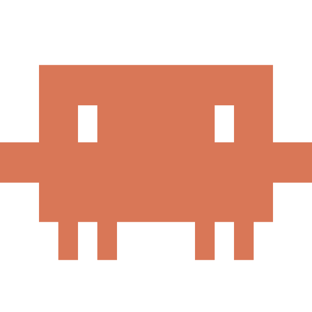

EdgeLab Space — дизайн-система и карта страниц
Портал об AI-агентах (Claude Code, Hermes, Codex) от Даши Ешиева и канала «Записки AI-энтузиаста». Один общий стиль, один движок, все десктопные и мобильные страницы — в одном месте, чтобы ничего не потерять.
Архитектура
Все страницы — это тонкие HTML-обёртки над общим движком. Стиль и компоненты живут в двух файлах.
window.__GF_VIEW (+ __GF_CAT), и движок рендерит нужный экран.index.html, claude-code.html…). Мобильная версия — одна оболочка mobile.html, экран выбирается по якорю: mobile.html#home, #library, #claude, #hermes, #codex, #about. Меню в мобильной версии ведёт именно на мобильные экраны.Логотип — стандарт написания
Вордмарк «edgelab·space»: два слова строчными и lime-квадрат-маркер между ними. Это единственный правильный способ.
Правила
написаниеedgelab·space — оба слова строчными, без пробела «edgelab space»
шрифтInter Tight · 600 · letter-spacing −0.04em
маркерlime-квадрат #D4FF00, обводка ink, на базовой линии букв
цвет текстанаследует контекст: ink на светлом, #f4f4f0 на тёмном
квадрат на тёмномобводка rgba(255,255,255,.55)
<Logo /> в gf-app.jsx — <span class="el-logo"><span class="a">edgelab</span><span class="sq"></span><span class="b">space</span></span>. Используйте только его, не набирайте текстом.Цвета
Тёплый бумажный фон, угольный ink и фирменный lime-акцент. Акцент появляется точечно — там, где продаём или выделяем.
Токены (CSS-переменные)
--bg#FAF7F2 · dark #141416
--text#1c1c1f · dark #f4f4f5
--muted#6b7280 · dark #9ca3af
--ink#0A0A0A
--lime#D4FF00
--offwhite#FBFBF8
--hairrgba(0,0,0,.08) · dark rgba(255,255,255,.10)
--card-borderrgba(0,0,0,.10) · dark rgba(255,255,255,.12)
Типографика
Три гарнитуры: Inter — текст, Inter Tight — заголовки, JetBrains Mono — служебные подписи, эйбрау и цифры.
заголовки
основной текст
эйбрау / подписи
Компоненты
Все определены в gf-app.jsx и переиспользуются на десктопе и в мобайле.
Логотипы харнессов
Иконки продуктов, которые используются в разделах и карточках статей. Источник — предоставлены пользователем (загружены в проект).



images/. Подставляются в карточки разделов и геро статей Claude Code, Codex и Hermes как иконки 1:1.Карта страниц — десктоп
Отдельные HTML-файлы в корне. Открываются напрямую; меню связывает их между собой.
| Файл | Что это | Рендер (__GF_VIEW) | Тема |
|---|---|---|---|
index.html | Главная — лента: геро «AI ПОРТАЛ», Статьи, Гайды | home | lightdark |
library.html | Все гайды — библиотека 500 + поиск ⌘K | library | lightdark |
claude-code.html | Статья «Как я собрал окружение за вечер» | category · claude | lightdark |
hermes.html | Статья «Hermes стал моим аналитиком» | category · hermes | lightdark |
codex.html | Статья «Codex на практике» | category · codex | lightdark |
about.html | О проекте — автор, сообщество, канал | about | lightdark |
guide.html | Статья по умолчанию (= Claude Code), полный ридер | variantC | lightdark |
Карта страниц — мобайл
Одна оболочка mobile.html, экран выбирается якорем. Переходы из бургер-меню остаются в мобильной версии.
| Адрес | Экран | Компонент |
|---|---|---|
mobile.html#home | Главная (телефон) | Home · mobile |
mobile.html#library | Все гайды + поиск ⌘K | Catalog · mobile |
mobile.html#claude | Статья Claude Code | MobileArticle |
mobile.html#hermes | Статья Hermes | MobileArticle |
mobile.html#codex | Статья Codex | MobileArticle |
mobile.html#about | О проекте | AboutPage · mobile |
Служебные файлы
| Файл | Назначение |
|---|---|
gf-app.jsx | Все компоненты + роутинг (mount-switch по __GF_VIEW / __GF_CAT / hash) |
gf-styles.css | Единый стиль — пересобирается из <style> в guides-funnel-explore.html |
image-slot.js | Заполняемые слоты под баннеры |
guides-funnel-explore.html | Холст всех вариантов (десктоп/мобайл/темы) — рабочий исходник стиля |
EdgeLab - Главная.html · EdgeLab Guides - Вариант C.html | Ранние отдельные версии Главной и статьи (legacy, дублируют index/guide) |
guides-funnel-explore.html (блок <style>), затем пересобираем gf-styles.css из него — иначе отдельные страницы не подхватят изменения. Логику и тексты — в gf-app.jsx; все страницы обновятся сразу, так как ссылаются на один файл.